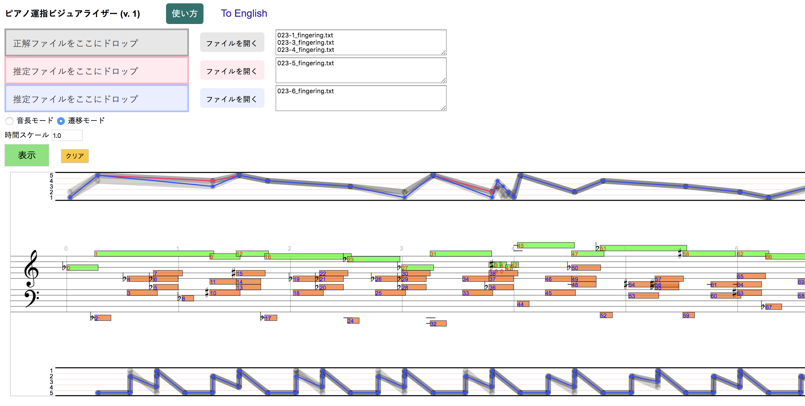

中村栄太、齋藤康之、吉井和佳
ピアノ運指データを用いた統計学習手法による運指推定
情報処理学会 音楽情報科学研究会にて発表
ピアノ運指データを用いた統計学習手法による運指推定
情報処理学会 音楽情報科学研究会にて発表
HMMによる運指の推定結果
1次のHMM: Result_FHMM1.zip (115KB)2次のHMM: Result_FHMM2.zip (115KB)
3次のHMM: Result_FHMM3.zip (114KB)
学習データと評価データ
PIGデータセットの異なるサブセットを用いてHMMの学習と評価を行いました。データに関する詳細はPIGデータセットのページをご覧ください。運指ビジュアライザー

このビジュアライザーを使えば、上の推定結果を観察したり比較できます。PIGデータセットの中の運指も同様に見られます。Google Chrome、Safari、Firefox、Microsoft Edgeなどのブラウザー上で動作します。